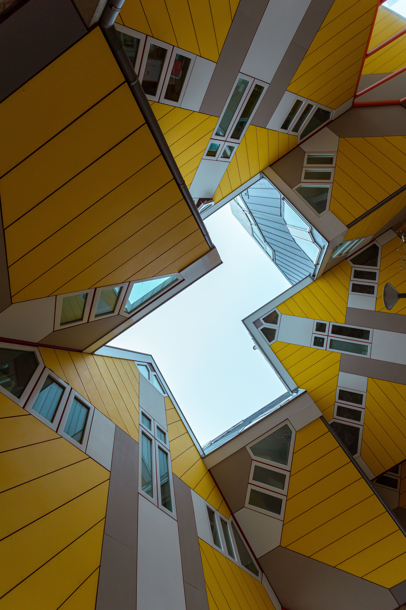
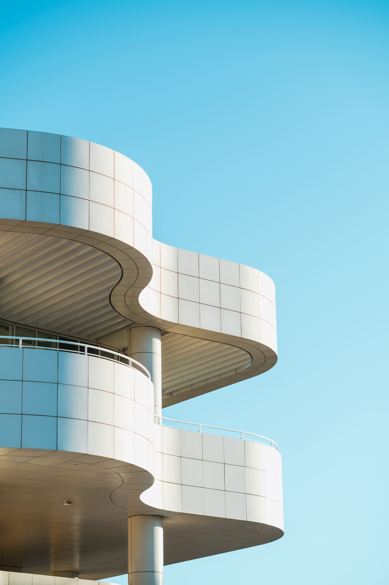
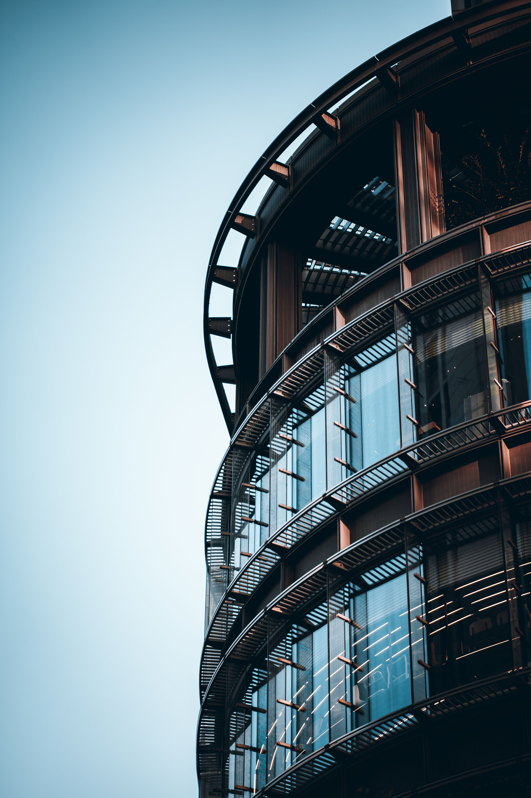

A studio designing buildings that age slowly — shaped from concrete, daylight, and the weight of the rooms between.
Selected WorkWe build quiet monuments — architecture stripped to mass, structure, and the discipline of light.
Years shaping the Nordic built environment.
Completed buildings across 6 countries.
International awards for built work.
A single board-marked concrete volume set into the dune line — closed to the wind, opened entirely to the sea.
The house is organised around a single load-bearing wall that runs the length of the plan, dividing served from serving space. Daylight enters through deep reveals cut into the mass, moving across the rooms as the day turns.
Materials are held to three: cast concrete, oiled oak, and blackened steel. Nothing is added that does not carry load or carry light.


Architecture is the discipline of removing — until only what holds weight and light remains.
Founded in 2009 by Ingrid Halden, the studio works between Copenhagen and Oslo on houses, cultural buildings, and adaptive reuse. We build slowly and in few materials, believing that restraint — not gesture — is what lets a building belong to its place. Every project begins with the section: how mass meets ground, and how light is let in.

Full design from concept through construction — houses, cultural and civic buildings.
Giving weight and new life to existing structures, with as little demolition as possible.
Rooms, joinery and fixed furniture detailed in the same few honest materials.
Siting, landscape and urban strategy — how a building meets ground, city and horizon.